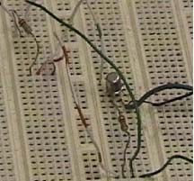

Experiment #3
All data were sketches of the signal. Pictures taken of each.
Experiment #4
2N2222A Transistor
|
Resistance (kΩ) IB (μA) IC (mA) 900 4.6 0.65 800 5.0 0.73 700 5.9 0.84 600 6.8 0.98 500 8.1 1.17 400 10.0 1.45 300 13.0 1.89 200 18.5 2.70 100 32.2 4.67 40 56.8 6.95 |  |
Part 2
RL = 0 V = 4.12 D.C. volts
RL = 99 Ω V = 2.071 D.C. volts
“Bare” Source across the 20 kΩ resistor is 2.43 V.
Part B Figure 4
RB1 = 13000k Ω
RB2 = 100 k Ω
RL IC IB
(kΩ) (mA) (mA)
1 0.59 0.42
2 0.30 0.70
3 0.20 0.81
4 0.16 0.86
5 0.13 0.89
6 0.11 0.91
8 0.07 0.94
10 0.07 0.95
Part. C
VB = 0.795 V
VE = 0.201
VC = 0.256 V
RL = 3.75 k Ω
RE = 375 k Ω
RB1 = 6.75 k Ω
RB2 = 675 k Ω
Lab #5
Op. Amp. Lab
All pictures of signals.
Lab # 6
Part I.
Rcutoff = 700 kΩ
RF = 900 kΩ
Frequency = 300 Hz
Part II.
RF = 8 kΩ
Frequency = 15376 Hz
Part III.